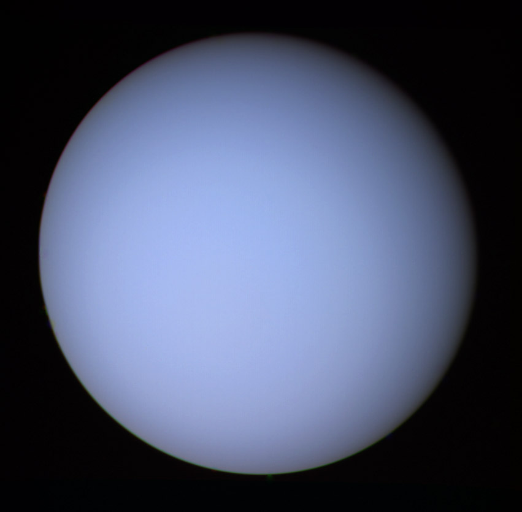
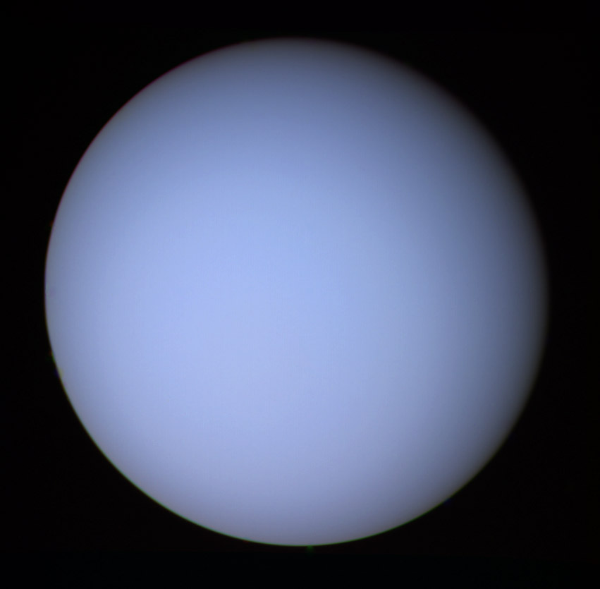

| Earth | Nepture | Uranus | Saturn | |
|---|---|---|---|---|
| Mass (kg) | 5.98 x 10^24 | 1.02 x 10^26 | 8.68 x 10^25 | 5.69 x 10^26 |
| Diameter (km) | 12756 | 49528 | 51118 | 120660 |
| Mean density (kg/m^3) | 5520 | 1640 | 1290 | 690 |
| Escape velocity (m/s) | 11200 | 23300 | 21300 | 35600 |
| Avg Dist from sun | 1 AU (149,597,890 km) | 30.07 AU (4,498,252,900 km) | 19.19 AU (2,870,972,200 km) | 9.537 AU (1,426,725,400 km) |
| Rotation period (length of day in Earth days) | 1 (23.93 hours) | 0.67 (19.1 hours) | 0.72 (17.9 Earth hours)(retrograde) | 0.44 (10.2 Earth hours) |
| Revolution period (length of year in Earth days) | 365.26 | 60,190 (164.8 Earth years) | 30,685 (84 Earth years) | 29.46 |